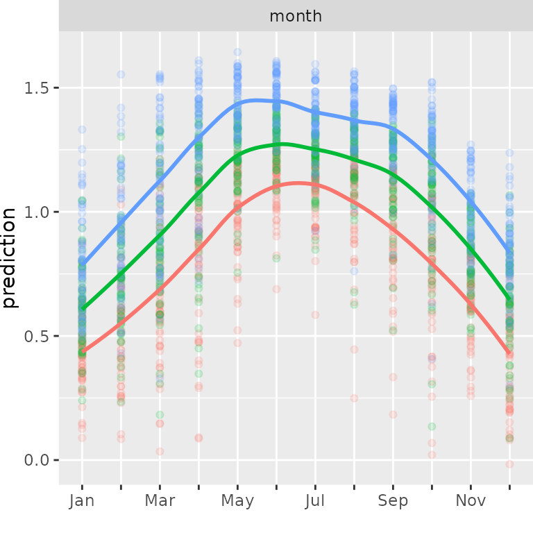

D-vine quantile regression with discrete variables: analysis of bike rental data
Dani Kraus and Thomas Nagler
November 8, 2017
Source:vignettes/bike-rental.Rmd
bike-rental.RmdPlot function for marginal effects
plot_marginal_effects <- function(covs, preds) { cbind(covs, preds) %>% tidyr::gather(alpha, prediction, -seq_len(NCOL(covs))) %>% dplyr::mutate(prediction = as.numeric(prediction)) %>% tidyr::gather(variable, value, -(alpha:prediction)) %>% dplyr::mutate(value = as.numeric(value)) %>% ggplot(aes(value, prediction, color = alpha)) + geom_point(alpha = 0.15) + geom_smooth(span = 0.5, se = FALSE) + facet_wrap(~ variable, scale = "free_x") + theme(legend.position = "none") + theme(plot.margin = unit(c(0, 0, 0, 0), "mm")) + xlab("") }
Data preparation
Load data
## instant dteday season yr mnth holiday weekday workingday weathersit
## 1 1 2011-01-01 1 0 1 0 6 0 2
## 2 2 2011-01-02 1 0 1 0 0 0 2
## 3 3 2011-01-03 1 0 1 0 1 1 1
## 4 4 2011-01-04 1 0 1 0 2 1 1
## 5 5 2011-01-05 1 0 1 0 3 1 1
## 6 6 2011-01-06 1 0 1 0 4 1 1
## temp atemp hum windspeed casual registered cnt
## 1 0.344167 0.363625 0.805833 0.1604460 331 654 985
## 2 0.363478 0.353739 0.696087 0.2485390 131 670 801
## 3 0.196364 0.189405 0.437273 0.2483090 120 1229 1349
## 4 0.200000 0.212122 0.590435 0.1602960 108 1454 1562
## 5 0.226957 0.229270 0.436957 0.1869000 82 1518 1600
## 6 0.204348 0.233209 0.518261 0.0895652 88 1518 1606Rename variables
bikedata <- bikedata %>% rename( temperature = atemp, month = mnth, weathersituation = weathersit, humidity = hum, count = cnt )
Un-normalize variables
See variable description on UCI web page.
bikedata <- bikedata %>% mutate( temperature = 66 * temperature + 16, windspeed = 67 * windspeed, humidity = 100 * humidity )
Show trend
ggplot(bikedata, aes(dteday, count)) + geom_line() + scale_x_date(labels = scales::date_format("%b %y")) + xlab("date") + ylab("rental count") + stat_smooth(method = "lm", se = FALSE, linetype = "dashed") + theme(plot.title = element_text(lineheight = 0.8, face = "bold", size = 20)) + theme(text = element_text(size = 18))

Remove trend
lm_trend <- lm(count ~ instant, data = bikedata) trend <- predict(lm_trend) bikedata <- mutate(bikedata, count = count / trend) ggplot(bikedata, aes(dteday, count)) + geom_line() + scale_x_date(labels = scales::date_format("%b %y")) + xlab("date") + ylab("detrended rental count") + theme(plot.title = element_text(lineheight = 0.8, face = "bold", size = 20)) + theme(text = element_text(size = 18))

D-vine regression model
Fit model
## D-vine regression model: count | temperature, humidity, windspeed, month, season, weathersituation, weekday, workingday
## nobs = 731, edf = 14.6, cll = 435.13, caic = -841.07, cbic = -774.01summary(fit)
## var edf cll caic cbic p_value
## 1 count 9.59683 -198.076002 415.34567 459.437472 NA
## 2 temperature 0.00000 415.812109 -831.62422 -831.624218 0.000000e+00
## 3 humidity 0.00000 118.903193 -237.80639 -237.806387 0.000000e+00
## 4 windspeed 1.00000 22.797655 -43.59531 -39.000897 1.453892e-11
## 5 month 1.00000 13.189174 -24.37835 -19.783935 2.806692e-07
## 6 season 1.00000 12.906850 -23.81370 -19.219286 3.760101e-07
## 7 weathersituation 1.00000 12.981254 -23.96251 -19.368095 3.481125e-07
## 8 weekday 0.00000 28.395759 -56.79152 -56.791517 0.000000e+00
## 9 workingday 1.00000 8.222092 -14.44418 -9.849771 5.010365e-05Marginal effects
plot_marginal_effects( covs = select(bikedata, temperature), preds = pred )


plot_marginal_effects(covs = select(bikedata, windspeed), preds = pred)

month_labs <- c("Jan","", "Mar", "", "May", "", "Jul", "", "Sep", "", "Nov", "") plot_marginal_effects(covs = select(bikedata, month), preds = pred) + scale_x_discrete(limits = 1:12, labels = month_labs)

plot_marginal_effects(covs = select(bikedata, weathersituation), preds = pred) + scale_x_discrete(limits = 1:3,labels = c("good", "medium", "bad"))

weekday_labs <- c("Mon", "Tue", "Wed", "Thu", "Fri", "Sat", "Sun") plot_marginal_effects(covs = select(bikedata, weekday), preds = pred) + scale_x_discrete(limits = 1:7, labels = weekday_labs)

plot_marginal_effects(covs = select(bikedata, workingday), preds = pred) + scale_x_discrete(limits = 0:1, labels = c("no", "yes")) + geom_smooth(method = "lm", se = FALSE) + xlim(c(0, 1))

season_labs <- c("spring", "summer", "fall", "winter") plot_marginal_effects(covs = select(bikedata, season), preds = pred) + scale_x_discrete(limits = 1:4, labels = season_labs)